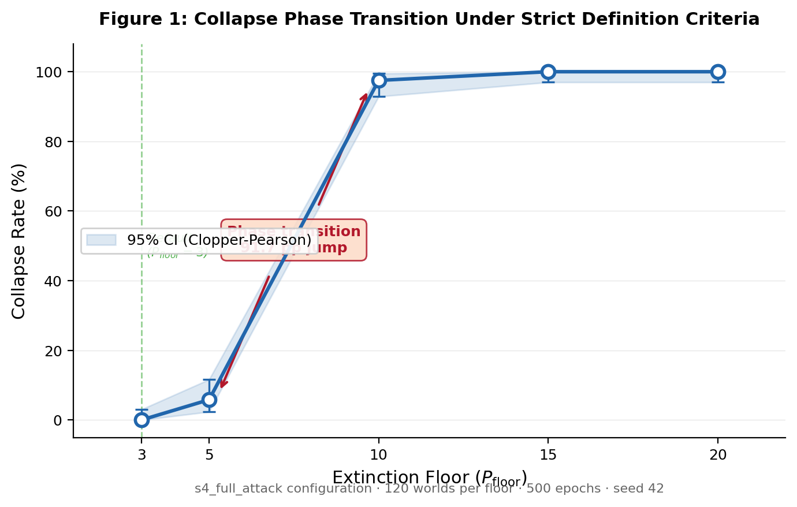

Research Documentary
A closed economy of heterogeneous agents. Metabolic costs, logistic resource pools, stochastic catastrophes, and bounded mutation. The question: under what conditions does the population collapse?
Stability is not assumed. It is tested.
Genesis is a deterministic laboratory for studying economic civilizations under scarcity and bounded mutation. 5,680 worlds. Zero collapses under operational definition.
But definitions matter. This is where stability lives. And where it fails.
Voice: Calm, measured. Set the frame. No drama — just scope.There is no free lunch. Each agent incurs a basal metabolic cost of 0.15 ATP per epoch and a 2% natural decay on stored wealth. Survival requires continuous extraction from finite resource pools.
The economy is closed. Five logistic resource pools regenerate seasonally, each with carrying capacity limits and density-dependent competition. Extraction scales with fitness — a weighted function of four genetically determined traits: cognitive efficiency, strategic quality, resource foraging, and cooperative capacity.
Reproduction costs 25 ATP. Only agents with fitness ≥ 0.35, balance ≥ 25 ATP (adjusted for season and stress), and age ≥ 10 epochs can reproduce. Maximum 3 births per epoch, logistically suppressed as population approaches carrying capacity.
Three taxation mechanisms redistribute wealth: an entropy burn on total supply, a flat wealth tax on holdings above 100 ATP, and a Gini-triggered progressive tax on the top decile. A central treasury absorbs 5% of all income and redistributes through role-based stipends and crisis spending.
Every agent is born hungry. 0.15 ATP per epoch, just to breathe. 2% decay on everything you've saved. And reproduction — 25 ATP, if you're fit enough, old enough, wealthy enough.
This isn't abundance with a tax. This is thermodynamics.
Voice: Weight on "hungry." Let "thermodynamics" land with finality.The system's characterization changes from "universally surviving" to "mostly collapsed" — depending on where you place the observation threshold.
Collapse is defined as population remaining below a floor Pfloor for 50 consecutive epochs. Under the default definition (Pfloor = 3), zero collapses are observed. Under Pfloor = 10, collapse reaches 97.5%. Both descriptions are accurate. They describe the same underlying dynamics with different measurement thresholds.
The transition from 5.8% to 97.5% collapse — a jump of 91.7 percentage points over a factor-of-two change in the floor parameter — constitutes a discontinuous phase transition. The system's equilibrium population under maximal stress is narrowly concentrated in the range of 3–8 agents. Populations do not gradually thin. They compress to a survival band and either persist or universally collapse, depending on where the definition line falls.
| Pfloor | Collapse Rate | Collapsed / Total | 95% CI (Clopper-Pearson) |
|---|---|---|---|
| 3 (default) | 0.0% | 0 / 120 | [0.0%, 3.0%] |
| 5 | 5.8% | 7 / 120 | [2.4%, 11.6%] |
| 10 | 97.5% | 117 / 120 | [92.9%, 99.5%] |
| 15 | 100.0% | 120 / 120 | [97.0%, 100%] |
| 20 | 100.0% | 120 / 120 | [97.0%, 100%] |
Under floor 3, zero collapses. Under floor 10, near-universal collapse. Same worlds. Same dynamics. Different question.
The survival band is narrow — 3 to 8 agents under maximum stress. Move the definition line across that band, and the entire characterization inverts.
This is the honest result. Stability is not a binary. It is a boundary.
Voice: Pause between "Different question" and the next line. Let the audience sit with it.The system includes a hand-engineered homeostatic controller. The question is not whether it stabilizes — it was designed to. The question is what happens when it's removed.
Every 25 epochs, the adaptive cortex evaluates 8 threat indicators against three-tier thresholds: monoculture dominance, ATP oligarchy, mutation runaway, population decline, role extinction, treasury depletion, wealth concentration, and economic stagnation. Each threat maps to prescribed parameter adjustments with bounded step limits and 50-epoch cooldowns.
This is not emergence. It is a feedback controller with heuristically selected gains. Its inclusion reflects a design decision, not a discovery. Season 2 experiments disable the cortex entirely, isolating its contribution.
With all safety mechanisms active (Season 1), population stabilizes comfortably at 48–49 agents with minimum populations around 20. With all mechanisms removed (Season 2, S4), population contracts to mean 12.8, minimum 3. The system does not degrade gracefully — it transitions sharply from engineered stability to marginal survival.
The adaptive cortex is not intelligence. It's a thermostat. A hand-tuned set of thresholds designed to damp oscillations. It works — populations are comfortable at 49 agents with it running.
Season 2 turns it off. Then turns off mutation. Then turns off treasury redistribution. Then resource regeneration. Then everything.
What remains is a population of 12.8 agents. Minimum 3. Alive, but barely.
Voice: Build cadence on the "Then" sequence. Drop to quiet on "Alive, but barely."The simulation is fully deterministic. SHA-256 hash chains seed agent identity. Knuth MMIX linear congruential generators drive all in-epoch decisions. Given the same seed, every world produces bit-identical output.
Agent genomes are derived by chaining SHA-256 hashes from parent to child, incorporating entropy, timestamp, and child ID. Traits are extracted as u64 little-endian byte slices normalized to [0, 1]. Skills come from individual bytes. Roles from modular arithmetic. Nothing is random — everything is seeded.
Each experiment produces two verification hashes: a manifest hash (configuration fingerprint) and a result hash (configuration + all computed results). The hash registry contains 38 entries with verified bit-identical reproduction. Cross-architecture determinism is constrained by IEEE 754 floating-point rounding behavior — a documented limitation.
There is no randomness here. Every trait, every death, every catastrophe, every birth — derived from hash chains and linear congruential generators with published constants.
Given the seed, you get the world. Every time. On the same architecture.
That last qualifier matters. It's a limitation, not a footnote.
Voice: Emphasis on "same architecture." Brief pause. Then the qualifier — direct, honest.Season 1 stressed economic parameters with all safety mechanisms active. Season 2 systematically disabled structural invariants. Together: 5,680 world-runs spanning 2,840,000 computed epochs.
| Season | Experiments | Worlds | Collapse Rate | 95% CI |
|---|---|---|---|---|
| Season 1 | 25 | 4,180 | 0.00% | [0, 0.088%] |
| Season 2 | 13 | 1,500 | 0.00% | [0, 0.246%] |
| Total | 38 | 5,680 | 0.00% | [0, 0.065%] |
Season 1 is the question: what happens when you stress the economy? Twenty-five experiments. Entropy. Catastrophe. Inequality. Metabolic cost multiplication. All safety mechanisms active.
Season 2 is the harder question: what happens when you remove the architecture? Disable the treasury. Disable ATP decay. Disable regeneration. Disable everything.
Both seasons: zero collapses under the default definition. But the margin narrows sharply.
Voice: Controlled escalation through the list. "Harder question" slightly lower register.Under the most extreme configuration tested (s4_full_attack), a discontinuous phase transition emerges when the collapse definition threshold crosses the system's equilibrium survival band.

| Soft Cap | Min Pop | Mean Pop | P10 | P90 |
|---|---|---|---|---|
| 30 | 3 | 5.8 | 3 | 9 |
| 60 | 3 | 8.2 | 4 | 13 |
| 90 | 3 | 10.1 | 5 | 16 |
| 120 | 3 | 12.4 | 6 | 19 |
| 150 | 3 | 14.8 | 7 | 23 |
| 180 | 3 | 16.5 | 8 | 26 |
Minimum populations reach the extinction floor (3) at all soft cap values under s4_full_attack, confirming that even at peak carrying capacity, populations transiently approach near-extinction.
This is the figure that tells the honest story. Under floor 3: zero collapses. Under floor 10: 97.5%. A cliff, not a slope.
The survival band is narrow. Three to eight agents. The entire characterization hinges on where you draw the line relative to that band.
We publish both views. Both are accurate. Both are necessary.
Voice: "A cliff, not a slope" — the key insight. Let it breathe.Zero collapses is not zero failures. The system exhibits pathological states, demographic fragility, and parameter-dependent breaking points that are documented explicitly.
Under s4_full_attack — the most extreme configuration — populations survive but exhibit reproductive inequality of 0.952. Nearly all births originate from the top fitness quartile. Survival inequality reaches 0.873. These are degenerate states: populations persist structurally while exhibiting extreme stratification.
The global minimum population observed in any core experiment is exactly 3 — the extinction floor threshold. This means the floor mechanism actively prevents collapse. It is a design safety net, not empirical robustness.
| Indicator | S3 All OFF | S4 Zero Regen | S4 Full Attack | S4 Extended |
|---|---|---|---|---|
| Reproductive inequality | 0.865 | 0.951 | 0.952 | 0.997 |
| Survival inequality | 0.892 | 0.941 | 0.873 | 0.954 |
| Wealth concentration (top 10%) | 0.488 | 0.393 | 0.417 | 0.318 |
| Mean Gini | 0.457 | 0.593 | 0.485 | 0.608 |
| Min population | 20 | 5 | 3 | 7 |
Fitness function fragility. Perturbation of the Resource Foraging weight by −20% causes collapses under s4_full_attack (1/120 worlds). Both variants that produced collapse shift weight away from resource extraction — consistent with extraction being a critical survival pathway under zero-regeneration conditions.
Untested regimes. The paper documents 8 categories of untested conditions: epochs beyond 5,000, populations above 200, correlated shocks, adversarial agents, multiple simultaneous weight perturbations, nonlinear fitness functions, cross-architecture execution, and multi-operator replication.
A population of 12 agents with reproductive inequality of 0.95 is alive. It is not healthy.
The extended horizon — 5,000 epochs — shows reproductive inequality reaching 0.997. One lineage. Producing almost everything. Whether that constitutes survival is a question about definitions. Again.
These are published. Not hidden. Not excused.
Voice: Reflective. "Again" callbacks to Instability. Final line — quiet conviction.The full source, all 38 experiment configurations, and the hash registry are published. Replication requires only Git and a Rust toolchain.
Hash verification. Compare the result_hash field in generated manifests against the canonical entries in replication_status.json. The verification script verify_replication.ps1 automates this. Expected output: 38/38 MATCH.
Known constraint. Floating-point determinism is not guaranteed across architectures. Cross-platform reproducibility requires identical IEEE 754 rounding behavior. Hash mismatches on ARM or different x86 microarchitectures are expected, not errors.
Single-operator disclosure. All 5,680 world-runs were executed by the same operator on the same machine. Independent replication has not yet occurred. The hash registry enables verification but does not substitute for it.
One command to clone. One command to test. One command to run any experiment.
But this has only been verified on one machine, by one person. The hashes are published. The verification is waiting. Independent replication is the next step — and it hasn't happened yet.
We state that directly. Not in a footnote. In the paper.
Voice: Short sentences, declarative. "Not in a footnote" — slight emphasis.Zero observed collapses constrains the true collapse probability. It does not prove collapse impossibility. The distinction matters.
Null hypothesis: H₀: the true collapse probability p > 0. Given k = 0 collapses in N = 5,680 independent trials, the Clopper-Pearson exact 95% confidence interval for p is [0, 0.000528]. By the rule of three: p < 3/5,680 = 0.053%.
Power analysis: The probability of observing zero collapses if the true rate were 0.1% is (0.999)5680 ≈ 0.0034. Statistical power exceeds 99.6%. If the true rate were 0.1% or higher, at least one collapse would almost certainly have appeared.
Weight robustness: Maximum observed collapse rate under any ±20% fitness weight perturbation: 0.8% (1 of 120 worlds). The two variants producing collapse both shift weight away from resource foraging — consistent with extraction being the critical survival pathway under zero-regeneration conditions. The zero-collapse result does not depend on precise weight calibration.
This does not prove p equals zero. It constrains: p is less than 0.053%, at 95% confidence. If the true rate were 0.1% or higher, 5,680 worlds would almost certainly have caught it.
The power is there. The constraint holds. The proof does not.
Voice: Precise. Mathematical. Final line: three beats, equal weight. No drama.Agent-based economic simulations typically report results under favorable conditions. This study reports results under systematic mechanism removal — disabling the architecture that was designed to prevent the very failure being measured. The contribution is not the observation of survival, but the characterization of where survival ends.
The collapse phase transition — the discovery that a factor-of-two change in the definition parameter produces a 91.7 percentage point swing in the collapse rate — demonstrates that stability claims in agent-based systems are inherently parameter-dependent. "Does the system collapse?" is not a well-formed question without specifying "collapse according to what definition?"
This finding is consistent with broader concerns in computational social science about measurement sensitivity. The system provides a concrete, reproducible example of definition-dependent characterization reversal: the same dynamics produce both "universally stable" and "universally collapsed" depending on a single threshold parameter.
All configurations, seeds, source code, and result hashes are published. The experiment is designed to be verified, not believed.
The question was never "can we build a system that survives." That's engineering. The question was "where does survival end, and what does the boundary look like?"
We found a cliff, not a slope. A phase transition in the definition space. That's the result.
Everything is published. Everything is reproducible. The next step is yours.
Voice: Warmer here. Slight pause before "The next step is yours." End clean.Full source code, experiment configurations, result hashes, and the research paper. Clone it, fork it, verify it.
git clone https://github.com/FTHTrading/Genesis.git
Run all 38 experiments on your own hardware. Compare SHA-256 result hashes against the canonical registry to verify bit-identical reproduction.
Add new stress configurations, explore populations beyond 200, test epochs beyond 5,000, or design correlated shock scenarios. The engine accepts custom experiment TOML files.
The current fitness function is a weighted linear combination of four traits. Test nonlinear models, perturb weights beyond ±20%, or introduce entirely new trait dimensions.
IEEE 754 floating-point rounding varies between x86_64 and ARM. Fork to test determinism guarantees on your architecture and document any hash divergences.